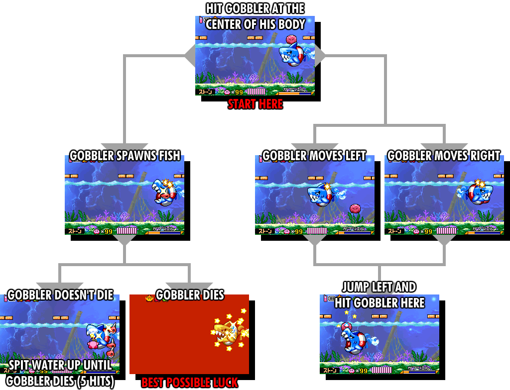

Gobbler
Years ago, old routes would do this boss second due to the RNG of sword skip (or later, the difficulty of UFO mix). This boss is done 5th now to get Meta Knight and Moley out of the way which have far worse luck based elements.
UFO / Fire Mix
UFO mix is not nearly as hard to time as Wheel mix, since UFO is much earlier on the roulette when inhaling bomb first. You use UFO to break the bomb block that is usually unreachable for the player, which skips going around a large room. If you time the mix 1 ability you will get fire which can still be used to hit the bomb blocks in the next room. So really UFO mix is an 8 frame trick.

Breaking the bomb blocks with fire.
Gobbler Flow Chart
As the chart shows, move to the top left and stone attack to get the final hit on Gobbler if he does anything other than spawn fish minions. Otherwise, UP+B to spray him to death. Sometimes it's possible to kill Gobbler with a single stone attack when he spawns fish. I believe this is an effect of hitlag from stone if you hit his minions however, MKCocoon says this is subpixel perfect so that's what I'm writing down.
Gobbler with Sword
If you lose stone before Gobbler, you can instead use sword against him. Final cutters (UP+B) are very effective since you have invincibility throughout most of it, but you need to make sure you are touching the floor. If you hold UP too long before pressing B, Kirby will swim up and do an air attack which is not very effective.